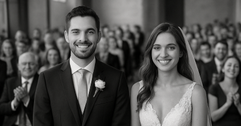
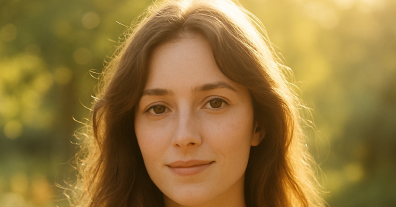
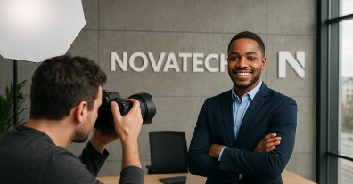

Evénements et reportages
Des photos spontanées et authentiques pour immortaliser vos événements artistiques, sportifs ou familiaux avec sensibilité et créativité.
Des photos spontanées et authentiques pour immortaliser vos événements artistiques, sportifs ou familiaux avec sensibilité et créativité.

Des photos spontanées et authentiques pour immortaliser vos événements artistiques, sportifs ou familiaux avec sensibilité et créativité.

Des photos spontanées et authentiques pour immortaliser vos événements artistiques, sportifs ou familiaux avec sensibilité et créativité.

Reportage photo complet, des préparatifs à la soirée, capturant les émotions et les petits détails d’une journée inoubliable.
Une série de portraits réalisés en extérieur, jouant avec la lumière du matin pour un rendu doux et poétique.


Shooting professionnel pour la communication interne et externe de l’entreprise, avec une mise en scène moderne et dynamique.
Paysages majestueux, contrastes puissants et jeux de lumière au cœur des terres islandaises.